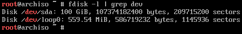
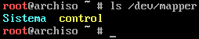

Introducción
Este documento es un manual con los pasos a seguir para instalar la distribución GNU/Linux Arch Linux de manera que el resultado sea un sistema estable, ligero y seguro. Para ello a los pasos "estándar" se van a añadir indicaciones para usar volúmenes lógicos (LVM) y encriptación de disco.
LVM
TODO
Encriptación
TODO
Prerrequisitos
Para simplificar el proceso es necesario que la máquina donde se vaya a instalar el sistema disponga de conexión a Internet por cable.
Además se debe tener preparado un USB con la ISO de Arch Linux cargada para que se ejecute al arrancar.
Por último, es necesario acceder a la BIOS para desactivar Secure Boot y activar UEFI.
Instalación
Índice
- Preparación y arranque del USB
- Particionar disco
- Formatear y encriptar particiones
- Instalar el sistema
Preparación y arranque del USB
Si el USB ha sido correctamente creado y la BIOS está bien configurada, al arrancar aparecerá un menú con opciones, entre ellas Arch Linux install medium. Tras seleccionar esa opción arrancará el sistema y nos mostrará un terminal sobre el que podremos configurar el disco e iniciar la instalación.

En este punto es conveniente cambiar la distribución del teclado a español:
loadkeys es
Antes de continuar es necesario disponer de conexión a Internet, para ello basta con hacer ping a cualquier URL válida y comprobar que responde:
ping -c3 archlinux.org
Particionar disco
Como se ha explicado anteriormente, se va usar LVM para evitar crear particiones fijas de tamaños predefinidos. En vez de eso, simplemente es necesario crear tres: el gestor de arranque, la memoria swap y la que contendrá el resto del sistema y cuentas de usuario (esta última cifrada).
El primer paso consiste en averiguar el identificador que se ha asignado al disco duro sobre el que se va a realizar la instalación mediante:
fdisk -l | grep dev
En este caso solo se dispone de un disco duro al que se le ha asignado el identificador sda:

Es importante realizar los cambios sobre el disco correcto en el que se quiere hacer la instalación porque el proceso de particionado elimina todo el contenido previo que hubiera en él.
El comando fdisk también permite gestionar particiones si se le pasa como parámetro un identificador de disco válido:
fdisk /dev/sda
Una vez dentro, los comandos a ejecutar para crear las particiones son:
gcrea una nueva tabla de particiones de tipo GPT.ninicia el asistente para crear una nueva partición.- Pulsar Intro para seleccionar por defecto el número de la partición.
- Pulsar Intro para seleccionar el valor por defecto del sector de inicio (First sector).
+500Mindica el tamaño de la partición (500 MiB en este caso) para quefdiskcalcule el último sector.tpara seleccionar el tipo de partición.1para seleccionar el tipo EFI System.
ninicia el asistente para crear una segunda partición (/boot).- Pulsar Intro para seleccionar por defecto el número de la partición.
- Pulsar Intro para seleccionar el valor por defecto del sector de inicio (First sector).
+500Mindica el tamaño de la partición (500 MiB en este caso) para quefdiskcalcule el último sector.
ninicia el asistente para crear una tercera partición (swap).- Pulsar Intro para seleccionar por defecto el número de la partición.
- Pulsar Intro para seleccionar el valor por defecto del sector de inicio (First sector).
- En este caso hay que indicar un tamaño equivalente al de la memoria RAM del ordenador. Por ejemplo, para 8 GiB hay que poner
+8G. tpara seleccionar el tipo de partición.3para seleccionar la partición.19para seleccionar el tipo Linux swap.
ninicia el asistente para crear una cuarta partición (/).- Pulsar Intro para seleccionar por defecto el número de la partición.
- Pulsar Intro para seleccionar el valor por defecto del sector de inicio (First sector).
- Pulsar Intro para seleccionar el espacio restante del disco.
tpara seleccionar el tipo de partición.4para seleccionar la partición.30para seleccionar el tipo Linux LVM.
Tras realizar estos pasos las particiones habrán sido correctamente creadas, aunque los cambios no son efectivos hasta que no se le indica a fdisk que los aplique, por lo que es posible comprobar que todo es correcto antes. La opción p muestra un resumen de los cambios realizados hasta el momento:
Finalmente se aplican los cambios con w y se cierra el asistente:

Formatear y encriptar particiones
Para evitar confusiones con los números de las particiones, se puede usar una tabla para consultar el nombre del dispositivo antes de realizar cualquier operación no reversible. Por eso, a partir de ahora se usará el id en vez del identificador del dispositivo.
| Id | Dispositivo | Tipo | Formato | Encriptada | Puntos de montaje |
|---|---|---|---|---|---|
| EFI | /dev/sda1 | EFI | FAT 32 | No | |
| Arranque | /dev/sda2 | Linux | Ext 4 | No | /boot |
| Swap | /dev/sda3 | Swap | No | ||
| Sistema | /dev/sda4 | LVM | Ext 4 | Sí | /home, / |
Formatear la partición EFI como FAT 32:
mkfs.fat -F32 /dev/sda1
Formatear la partición Arranque como Ext 4:
mkfs.ext4 /dev/sda2
Inicializar y activar la partición Swap:
mkswap /dev/sda3
swapon /dev/sda3
Antes de crear las particiones lógicas en Sistema hay que activar la encriptación:
cryptsetup luksFormat /dev/sda4
En este punto el sistema solicitará la contraseña a usar para desencriptar el disco y será la que habrá que introducir cada vez que se arranque el ordenador:

Para crear los volúmenes lógicos es necesario por lo tanto desencriptar la partición:
cryptsetup open --type luks /dev/sda4 Sistema
Este crea un fichero que hace referencia a la partición desencriptada:

Sistema es el nombre con el que se va a hacer referencia a la partición mientras haya sido desencriptada con el comando anterior. No es un nombre permanente.
Primero hay que crear un volúmen físico y un volume group que lo contenga:
pvcreate /dev/mapper/Sistema
vgcreate vg0 /dev/mapper/Sistema

Por último, hay que crear los volúmenes lógicos a partir del volume group:
lvcreate -L 20G vg0 -n system
lvcreate -l 100%FREE vg0 -n home
Hemos usado 20 GiB para la partición del sistema, lo recomendado, porque asumimos una capacidad de 100 GiB y el resto será para los datos de los usuarios.
Los volúmenes creados como home y system tendrán montadas las rutas /home y /. Solo queda formatearlos como Ext 4:
mkfs.ext4 /dev/vg0/home
mkfs.ext4 /dev/vg0/system
Instalar el sistema
En este punto es necesario montar las particiones en carpetas para que el script de instalación pueda acceder a ellas. Es necesario montar tres particiones:
mount /dev/vg0/system /mnt
mkdir /mnt/home
mount /dev/vg0/home /mnt/home
mkdir /mnt/boot
mount /dev/sda2 /mnt/boot
La instalación de Arch Linux, firmwares necesarios y el kernel de Linux se realiza mediante pacstrap. En este punto es necesario decidir qué kernel se instalará:
linux: última versión estable.linux-hardened: orientado a seguridad, incluye parches adicionales para evitar exploits.linux-lts: última versión LTS.linux-zen: última versión estable con parámetros de configuración reajustados para lograr un mayor rendimiento del kernel a cambio de un mayor consumo de potencia.
pacstrap /mnt base linux-zen linux-firmware sudo nano
El proceso de instalación es idéntico sin importar qué tipo de kernel se instale, con la salvedad del paquete
virtualbox.
Una vez el proceso haya finalizado, es necesario persistir en el fichero /etc/fstab la información de las particiones que han de montarse automáticamente cuando arranque el sistema. El comando empleado usará las que haya montadas en ese momento:
genfstab -U /mnt >> /mnt/etc/fstab
El comando more permite mostrar el contenido del fichero recién creado. En este caso debería mostrar cuatro particiones: Arranque, Swap y las dos del Sistema (/home y /).

Para completar la configuración del sistema base, es necesario ejecutar el comando arch-chroot /mnt para poder acceder libremente a los archivos de instalación y modificarlos. El prompt del terminal cambiará a partir de ahora:

El comando arch-chroot crea un chroot-jail, es decir, a partir de este momento no va a ser posible acceder a archivos fuera de la ruta absoluta
/mnt, que es donde se han montado las particiones. Además, los comandos ejecutados creerán estar en la ruta/. Se trata de una práctica habitual cuando se realizan tareas de críticas en un sistema, como actualizarlo, recuperar contraseñas o repararlo.
Configurar el sistema
Índice
- Zona horaria
- Idioma
- Red
- Disco RAM inicial
- Usuarios y contraseñas
- Gestor de arranque
- Microcodes
- Probar el sistema
- Instalar YAY
- Configurar SSH
Zona horaria
ln -sf /usr/share/zoneinfo/Europe/Madrid /etc/localtime
Idioma
Usando el editor nano, modificar el archivo /etc/locale.gen y descomentar las líneas en_US.UTF-8 UTF-8 y es_ES.UTF-8 UTF-8 para poder usar el sistema tanto en castellano como en inglés. Aplicar los cambios con el comando locale-gen.
Configurar la variable LANG en el fichero /etc/locale.conf en el idioma que se prefiera de los que se han configurado (en_US.UTF-8 en este caso):
echo "LANG=en_US.UTF-8" > /etc/locale.conf
Por último, configurar la distribución definiendo la variable KEYMAP en el fichero /etc/vconsole.conf:
echo "KEYMAP=es" > /etc/vconsole.conf
Red
Aunque en este punto el sistema sea capaz de conectarse a Internet y descargar paquetes, es necesario instalar el software necesario para que una vez eliminado el USB de instalación, se siga teniendo conectividad.
pacman -S networkmanager wpa_supplicant wireless_tools netctl iwd dhcpcd --noconfirm
El paquete networkmanager instala un servicio llamado NetworkManager para systemd que debe ser activado para que pueda gestionar la configuración de las interfaces de red, como asignar IPs o conectar a redes inalámbricas.
systemctl enable NetworkManager
Por último, hay que indicar el hostname editando el fichero /etc/hostname. En este caso, lo vamos a llamar ARCH:
echo ARCH > /etc/hostname
El archivo /etc/hosts también ha de ser modificado.

Disco RAM inicial
Es necesario reconstruir el script de arranque inicial para que sea capaz de leer las particiones LVM y de desencriptarlas, en caso de suministrarle la contraseña correcta.
Para ello basta con modificar el fichero de configuración /etc/mkinitcpio.conf que es leído cada vez que se regenera ese script. En concreto, a la línea
HOOKS = (base udev autodetect modconf block filesystems keyboard fsck)
hay que añadirle las opciones encrypt y lvm2 después de block:
HOOKS = (base udev autodetect modconf block encrypt lvm2 filesystems keyboard fsck)
Sin embargo, para que el hook de LVM pueda funcionar y el sistema sea capaz de leer las particiones al inicio, hay que instalar el paquete lvm2 puesto que no viene incluido en el sistema base:
pacman -S lvm2 --noconfirm
Tras instalar ese paquete se generarán las imágenes requeridas para arrancar el sistema de manera automática, no obstante puede ejecutarse manualmente mediante:
mkinitcpio -p linux-zen
Este comando incluye una imagen del kernel que se quiere que cargue al inicio y ha de coincidir con el que se ha instalado usando
pacstrap. Si se han instalado varios kernels, es necesario lanzarlo una vez por cada uno.
Usuarios y contraseñas
Inicializar contraseña de root
Antes de iniciar el sistema por primera vez tras instalar los paquetes, es recomendable configurar la contraseña del usuario root con el comando passwd.
Crear usuario
Crear un usuario sin permisos de administrador para el uso habitual del sistema también es lo recomendable. Este usuario pertenecerá a los grupos users y wheel, este último permitirá ejecutar comandos de root usando sudo.
En este caso, el usuario creado se llama diego y se le ha creado una carpeta en
/home/diegoa la que solo pueden acceder él yroot.
Al igual que con root, hay que definir la contraseña para el usuario recién creado:
Permitir ejecutar comandos de root con sudo
El comando visudo abre un editor de texto, configurable mediante la variable de entorno $EDITOR, para modificar el fichero /etc/sudoers de una forma segura (por ejemplo, no permite guardar cambios que vayan a provocar que el parseo del archivo falle). Ese archivo define, entre otras cosas, qué comandos pueden o no ejecutar los usuarios que no son root y si ha de solicitarles alguna contraseña previamente.
En este caso, se va a modificar para que los usuarios que pertenezcan al grupo wheel puedan lanzar cualquier comando como si fueran root (usando sudo).
EDITOR=nano visudo
Para que no se pida contraseña a los usuarios, hay que descomentar (eliminar el carácter #) la línea
# %wheel ALL=(ALL) NOPASSWD: ALL
Para que se les pida contraseña, la línea a descomentar es
# %wheel ALL=(ALL) ALL
Para guardar los cambios en el editor, hay que pulsar Ctrl + O y para salir, Ctrl + X. En caso de haber cometido algún error que haya dejado el fichero en un estado inestable, se muestra un aviso dando la opción de volver a abrir el editor o de descartar los cambios.
Gestor de arranque
De todos los gestores de arranque que hay, GRUB sigue siendo el que más compatibilidad ofrece y con el que más usuarios están familiarizados por su veteranía, por lo que se van a explicar los pasos para configurar el arranque del sistema EFI para él.
El primer paso es instalar los paquetes necesarios:
pacman -S grub efibootmgr dosfstools mtools --noconfirm
Con el paquete grub se instala su fichero de configuración correspondiente en /etc/default/grub. Es necesario editarlo para indicarle que la partición donde se ha instalado el sistema (en este caso, /dev/sda4) está encriptada y usa LVM.
nano /etc/default/grub
A la propiedad GRUB_CMDLINE_LINUX_DEFAULT hay que añadirle la partición encriptada, teniendo en cuenta que también está dentro de un volumen lógico. En este caso es /dev/sda4:vg0, por lo que la línea completa (incluyendo lo que hay por defecto) es:
GRUB_CMDLINE_LINUX_DEFAULT="loglevel=3 cryptdevice=/dev/sda4:vg0:allow-discards quiet"
Además, hay que indicarle que la encriptación es con formato LUKS descomentando la línea
GRUB_ENABLE_CRYPTDISK=y
En este punto es necesario montar la partición /dev/sda1, que en la tabla de la sección de particionado está indicado que va a contener los archivos necesarios para arrancar el sistema en modo EFI. Al tratarse de una partición con información requerida para arrancar el sistema, hay que montarla en una carpeta dentro de /boot, que a su vez es la carpeta donde se ha montado la partición /dev/sda2.
mkdir /boot/EFI
mount /dev/sda1 /boot/EFI
Finalmente, instalamos el gestor de arranque con el comando grub-install:
grub-install --target=x86_64-efi --bootloader-id="Arch Linux" --recheck
Por último, se genera el menú:
grub-mkconfig -o /boot/grub/grub.cfg
El resultado de este comando indicará que ha "encontrado" tres imágenes por cada kernel que se haya instalado: linux, initrd y fallback initrd.

Microcodes
Los fabricantes de procesadores publican actualizaciones de estabilidad y seguridad para el microcódigo de sus CPUs, que proporcionan correcciones de errores que pueden ser críticas. Por ello, es altamente recomendable que los poseedores de microprocesadores de AMD o Intel instalen el paquete correspondiente.
Para procesadores Intel:
pacman -S intel-ucode
Para procesadores AMD:
pacman -S amd-ucode
El modelo exacto de la CPU se puede obtener con el comando cat /proc/cpuinfo.
Probar el sistema
En este punto, si todo se ha hecho correctamente, el sistema debe arrancar sin problema. Primero se ha de salir del entorno de chroot en el que se ha estado trabajando:
exit
A continuación, se apaga el sistema:
poweroff
Con el sistema desconectado, se elimina el USB de instalación. Tras arrancar de nuevo, aparecerá el menú de GRUB.
Tras seleccionar la opción por defecto es necesario introducir la clave de cifrado de la partición Sistema, en este caso /dev/sda4.
Por último, hay que iniciar sesión con el usuario creado previamente, diego en este caso.
YAY
En Arch Linux existe un repositorio desde el que se pueden obtener paquetes que son mantenidos por la comunidad de usuarios, conocido como AUR - Arch User Repository. A diferencia de los paquetes oficiales, estos requieren que el usuario descargue un PKGBUILD que ejecutará los pasos necesarios para generar el instalable que sí que se instala en el sistema con el comando pacman. Estos pasos incluyen, entre otros:
- Descarga de código fuente o binarios.
- Comprobación MD5 de los recursos descargados.
- Instalar dependencias necesarias.
- Compilar el código fuente descargado.
- Generar el instalable.
Una desventaja de este tipo de paquetes es que cuando se actualiza el sistema, no son tenidos en cuenta. Sin embargo, existe una herramienta llamada yay que permite automatizar su instalación y actualización, junto a los paquetes oficiales. Es decir, no es necesario usar pacman si se tiene instalado yay.
Instalar yay
Algunos de los comandos a emplear no permiten ser ejecutados como
root, por lo que antes hay que iniciar sesión con otro usuario.
Instalar paquetes desde el AUR requiere descargar ciertos paquetes previamente:
sudo pacman -S base-devel --noconfirm
En este caso es necesario lanzar el comando mediante
sudoal no estar trabajando como usuarioroot.
Inicialmente hay que crear una carpeta, descargar el PKGBUILD de yay y extraer el contenido:
mkdir yay
cd yay
curl https://aur.archlinux.org/cgit/aur.git/snapshot/yay.tar.gz --output yay.tar.gz
tar -xf yay.tar.gz --strip-components=1
El comando makepkg se encarga de generar el binario instalable:
makepkg -s
Tras finalizar, se habrá creado un fichero instalable mediante pacman en la ruta donde se ha ejecutado el comando anterior, de extensión pkg.tar.zst.

La estructura es idéntica a la de los paquetes oficiales, pero hay que tener en cuenta que al ser mantenidos por usuarios que no forman parte del equipo oficial de Arch Linux, es posible que en algún momento alguno de estos paquetes deje de ser actualizado hasta que otro usuario asuma su mantenimiento. Mientras eso ocurre, en la página del AUR correspondiente a ese paquete aparecerá como out of date.

Aunque un paquete marcado como out of date puede aún ser instalado y funcionar, es recomendable buscar alternativas para garantizar la estabilidad del sistema.
Para instalar yay, se emplea pacman con el flag U:
sudo pacman -U yay-10.1.2-1-x86_64.pkg.tar.zst --noconfirm

Finalmente, se puede borrar la carpeta temporal que se ha empleado:
cd ..
rm -rf yay
Gestionar paquetes con yay
Para instalar un paquete con yay, basta con localizarlo en la web del AUR y ejecutar el comando como si se tratara de pacman. Por ejemplo, para el paquete de Skype:
yay -S skypeforlinux-stable-bin
Para desinstalar un paquete se sigue empleado pacman:
sudo pacman -Rns skypeforlinux-stable-bin
Los flags
nysle indican apacmanque borre los paquetes que haya habido que instalar como dependencias del que se está borrando, en caso de que no sean requeridos por ningún otro paquete que haya instalado. Son de uso opcional, pero permiten mantener el sistema más limpio.
Actualización completa del sistema con yay
Dado que yay reemplaza y amplia el alcance de pacman, es posible usarlo para lanzar una actualización completa del sistema, incluyendo tanto paquetes oficiales como del AUR, de manera desatentida:
yay --noremovemake --noconfirm --nocleanmenu --nodiffmenu --noeditmenu --noupgrademenu -Syu

SSH
SSH (Secure SHell) es un protocolo cuya función principal es acceder a un servidor remoto mediante un canal seguro en el que toda la información está cifrada. Permite:
- Copiar datos de forma segura con el comando
rsync. - Simular sesiones FTP cifradas.
- Gestionar claves RSA para evitar introducir contraseñas al conectar a los equipos.
- Redirigir tráfico de ventanas X para ejecutar programas gráficos remotamente.
El paquete openssh implementa el protocolo y provee el comando ssh. Por ejemplo, para conectar con el servidor en la IP 10.0.0.50 con las credenciales del usuario diego:
ssh diego@10.0.0.50
Es necesario que el servidor al que se conecta tenga instalado y en ejecución un servicio SSH.
Configurar clave RSA
Para conectar mediante SSH es necesario introducir la contraseña del usuario con cuya cuenta se vaya a acceder. Sin embargo, para evitarlo es posible configurar una clave RSA en la máquina guest e instalar la clave pública en cada uno de los servidores a los que se quiere conectar.
La clave se genera con el comando ssh-keygen:
ssh-keygen -t rsa
ssh-add ~/.ssh/id_rsa
Entorno gráfico
La instalación y configuración del sistema hasta ahora da como resultado un sistema Arch Linux estable y listo para trabajar, rápido y liviano. Sin embargo, es muy frecuente necesitar un entorno gráfico para utilizar la mayoría de programas disponibles, como IDEs de desarrollo o navegadores web. En ese caso es necesario instalar paquetes adicionales, como un sistema X Window, un gestor de ventanas, un gestor de inicio de sesión o un entorno de escritorio.
Existen multitud de alternativas para todos ellos y la mayoría se pueden combinar entre sí hasta lograr una configuración acorde a lo deseado y a los recursos de los que se dispone. Para ser lo más generalista posible, este capítulo va a explicar cómo instalar el entorno de escritorio KDE.
Para evitar usar
sudocon cada comando, es recomendable iniciar sesión con el usuarioroot.
Índice
Entorno de escritorio
Una instalación mínima de KDE se consigue con el paquete plasma-desktop, aunque es necesario instalar más paquetes adicionales para el correcto renderizado en pantalla.
pacman -S mesa plasma-desktop plasma-wayland-session xorg-server-xwayland konsole plasma-nm --noconfirm
Gestor de inicio
El paquete sddm es el gestor de inicio recomendado si se trabaja con KDE.
pacman -S sddm sddm-kcm kwallet-pam --noconfirm
SDDM necesita activar un servicio de systemd para iniciar automáticamente al arranque:
systemctl enable sddm
Es necesario reiniciar para aplicar todos los cambios:
reboot
SDDM se cargará y mostrará una ventana gráfica para introducir un usuario y una contraseña.
Paquetes
Comunicación
| Paquete | Descripción |
|---|---|
| discord | Discord |
| slack-desktop | Slack Desktop |
| skypeforlinux-stable-bin | Cliente oficial de Skype |
| teams | Microsoft Teams |
| telegram-desktop | Cliente oficial de Telegram |
Correo electrónico
| Paquete | Descripción |
|---|---|
| thunderbird | Thunderbird |
Navegadores web
| Paquete | Descripción |
|---|---|
| brave | Brave |
| chromium | Chromium |
| firefox | Firefox |
| google-chrome | Google Chrome |
| opera | Opera |
| vivaldi | Vivaldi |
Utilidades KDE
| Paquete | Descripción |
|---|---|
| kscreen | Aplicación oficial de KDE para configurar monitores |
| okular | Visor de PDFs |
Utilidades GNU/Linux
| Paquete | Descripción |
|---|---|
| openssh | Protocolo SSH |